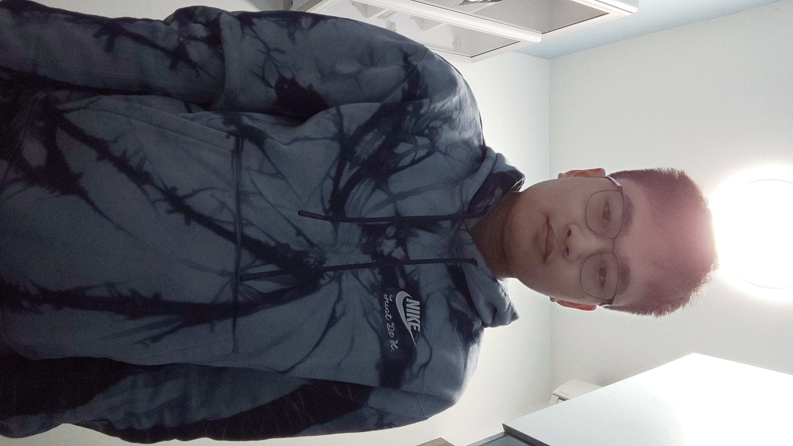
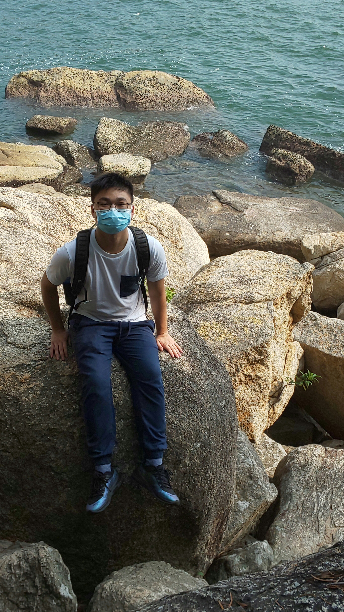

Hello, I am Cheuk Lok Kan, a year 2 student now studying in Department of Computing, The Hong Kong Polytechnic University and majoring in Information Technology. Before I was admitted here in 2019, I had graduated in Pui Kiu College, a school which I had been studying for 12 years. I take Chemistry and Information & Communication Technology during my high school.
Tertiary education facilitates me with a good chance to train myself to think critically and independently. In spite of my hitherto limited knowledge, I believe my critical thinking, my creativity, my logical cogitation; my character and my potential will fully be exerted and sharpened through education at tertiary level. I shall choose fields either related to computer or science in hopes of fulfilling these expectations and the free ambience in the university, where my tertiary education begins, is vital for me to pursue these aims by learning a wide variety of knowledge in various lessons and by abundant resources in library. Therefore, tertiary education, indeed, help me satisfy such a need.
By means of education at the tertiary level, I am able to be well-equipped with the knowledge and skills required in the computer or science profession, which I intend to pursue as my future career. For equipping myself and broadening my horizons, I joined the “Internet Economy Summit” and “Shenzhen High-tech Development Exchange Tour” in 2018. Engaging in the industry of IT or science, I can learn the skills and knowledge in these aspects and use these to facilitate the advancement the society. It is no wonder that Hong Kong has been experiencing rapid changes in technology and science, so being a Hong Kong citizen, I will be endeavor to unleash my effort to serve the society in terms of my future career by making contributions on such developments in order to elevate Hong Kong competitiveness. The fields I am going to take part in directly relate to my career. Once I graduate from the university, I can involve myself in above-mentioned industries without encountering a lot of difficulties.
I am a quiet, inquisitive and self-motivated person. I usually pay attention to the details of what I learn. When I find something particular in my study, I usually try to get to the bottom of things by searching it on the Internet in order to enrich my knowledge notwithstanding that being not required in my current study. Undergoing tertiary education, I suppose that my talent can be comprehensively brought into play owing to the level of self-discipline needed for a freshman in the university. Nevertheless, being introvert could be one of my weaknesses, so I have faith in overcoming it by group projects and tasks in numerous lessons as it is indisputably a must for a university student to be used to cooperating with schoolmates. All in all, I look forward to enjoying a worthwhile university life.
I enjoy travelling and experiencing different cultures, and I have travelled in East Asia such as Japan and China. I have got a qualification certificate in Japanese language in 2017 so as to communicate with people there with fewer barriers. Moreover, playing some flash games is one of my hobbies because it enables me to alleviate stresses in my life, and the most important benefit is to let me be interested in discovering the working principle of these games, which has me inspire in several aspects of computer studies.
Here are my photos.
| My photos | ||||
|---|---|---|---|---|
| Description | Photo | Description | Photo | |
| My first photo | My third photo | |||
| My second photo |  | My last photo |  | |
The drive below stores my programs written.
Pomato is the YouTube channel I like the most. Here is its theme song.
Animal crossing is the game I like the most. Here are the photos of my character in the game.